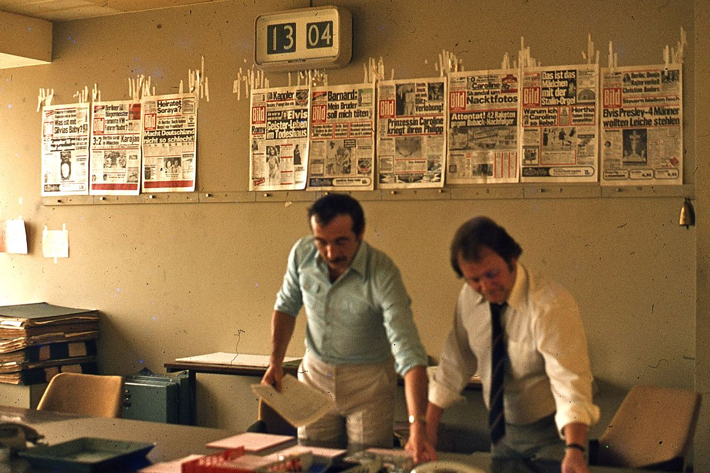
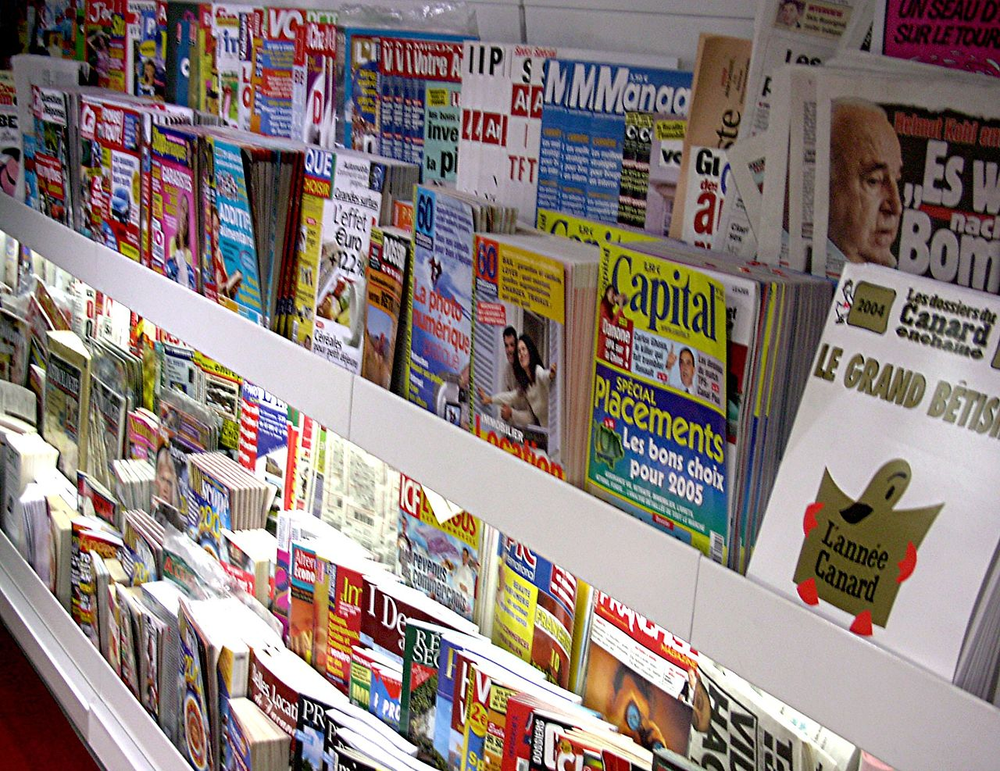

The CSS On This Headline Should Make It Go All The Way Across The Page
With manuscripts, all of the elements are added by hand, so the creator can determine the layout directly as they create the work, perhaps with an advance sketch as a guide.
With ancient woodblock printing, all elements of the page were carved directly into wood, though later layout decisions might need to be made if the printing was transferred onto a larger work, such as a large piece of fabric, potentially with multiple block impressions.
With the Renaissance invention of letterpress printing and cold-metal moveable type, typesetting was accomplished by physically assembling characters using a composing stick into a galley - a long tray. Any images would be created by engraving.
The original document would be a hand-written manuscript; if the typesetting was performed by someone other than the layout artist, markup would be added to the manuscript with instructions as to typeface, font size, and so on. (Even after authors began to use typewriters in the 1860s, originals are still called "manuscripts", and the markup process was the same.) After the first round of typesetting, a galley proof might be printed in order for proofreading to be performed, either to correct errors in the original, or to make sure that the typesetter had copied the manuscript properly, and correctly interpreted the markup. The final layout would be constructed in a "form" or "forme" using pieces of wood or metal ("furniture") to space out the text and images as desired, a frame known as a chase, and objects which lock down the frame known as quoins. This process is called imposition, and potentially includes arranging multiple pages to be printed on the same sheet of paper which will later be folded and possibly trimmed. An "imposition proof" (essentially a short run of the press) might be created to check the final placement.
The invention of hot metal typesetting in 1884 sped up the typesetting process by allowing workers to produce slugs - entire lines of text - using a keyboard. The slugs were the result of molten metal being poured into molds temporarily assembled by the typesetting machine. The layout process remained the same as with cold metal type, however - assembly into physical galleys.
Paste-up era
Offset lithography allows the bright and dark areas of an image (at first captured on film) to control ink placement on the printing press. This means that if a single copy of the page can be created on paper and photographed, then any number of copies could be printed. Type could be set with a typewriter, or to achieve professional results comparable to letterpress, a specialized typesetting machine. The IBM Selectric Composer, for example, could produce type of different size, different fonts (including proportional fonts), and with text justification. With photoengraving and halftone, physical photographs could be transferred into print directly, rather than relying on hand-made engravings.
The layout process then became the task of creating the paste up, so named because rubber cement or other adhesive would be used to physically paste images and columns of text onto a rigid sheet of paper. Completed pages become known as camera-ready, "mechanicals" or "mechanical art".
Phototypesetting was invented in 1945; after keyboard input, characters were shot one-by-one onto a photographic negative, which could then be sent to the print shop directly, or shot onto photographic paper for paste-up. These machines became increasingly sophisticated, with computer-driven models able to store text on magnetic tape.
Computer-aided publishing
Editors work on producing an issue of Bild, 1977 in West Berlin. Previous front pages are affixed to the wall behind them.
As the graphics capabilities of computers matured, they began to be used to render characters, columns, pages, and even multi-page signatures directly, rather than simply summoning a photographic template from a pre-supplied set. In addition to being used as display devices for computer operators, cathode ray tubes can be used to render text for phototypesetting.
Printers attached directly to computers allowed them to documents directly, in multiple copies or as an original which could be copied on a ditto machine or photocopier. WYSIWYG word processors made it possible for general office users and consumers to make more sophisticated page layouts, use text justification, and use more fonts than were possible with typewriters. Early dot matrix printing was sufficient for office documents, but was of too low a quality for professional typesetting. Inkjet printing and laser printing did produce sufficient quality type, and so computers with these types of printers quickly replaced phototypesetting machines.
With modern desktop publishing software, the layout process can occur entirely on-screen. (Similar layout options that would be available to a professional print shop making a paste-up are supported by desktop publishing software; in contrast, "word processing" software usually has a much more limited set of layout and typography choices available, trading off flexibility for ease of use for more common applications.) A finished document can be directly printed as the camera-ready version, with no physical assembly required (given a big enough printer). Greyscale images must be either halftoned digitally if being sent to an offset press, or sent separately for the print shop to insert into marked areas. Completed works can also be transmitted digitally to the print shop, who may print it themselves, shoot it directly to film, or use computer to plate technology to skip the physical original entirely. PostScript and Portable Document Format (PDF) have become standard file formats for digital transmission.
Digital media (non-paper)
Since the advent of personal computing, page layout skills have expanded to electronic media as well as print media. E-books, PDF documents, and static web pages mirror paper documents relatively closely, but computers can also add multimedia animation, and interactivity. Page layout for interactive media overlaps with interface design and user experience design; an interactive "page" is better known as a graphical user interface (GUI).
Modern web pages are typically produced using HTML for content and general structure, cascading style sheets to control presentation details such as typography and spacing, and JavaScript for interactivity. Since these languages are all text-based, this work can be done in a text editor, or a special HTML editor which may have WYSIWYG features or other aids. Additional technologies such as Macromedia Flash may be used for multimedia content. Web developers are responsible for actually creating a finished document using these technologies, but a separate web designer may be responsible for establishing the layout. A given web designer might be a fluent web developer as well, or may merely be familiar with the general capabilities of the technologies and merely visualize the desired result for the development team.